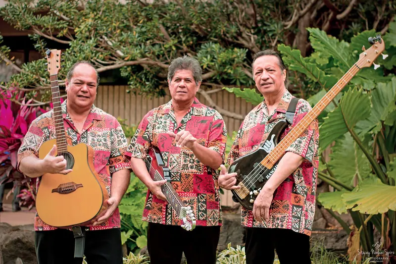
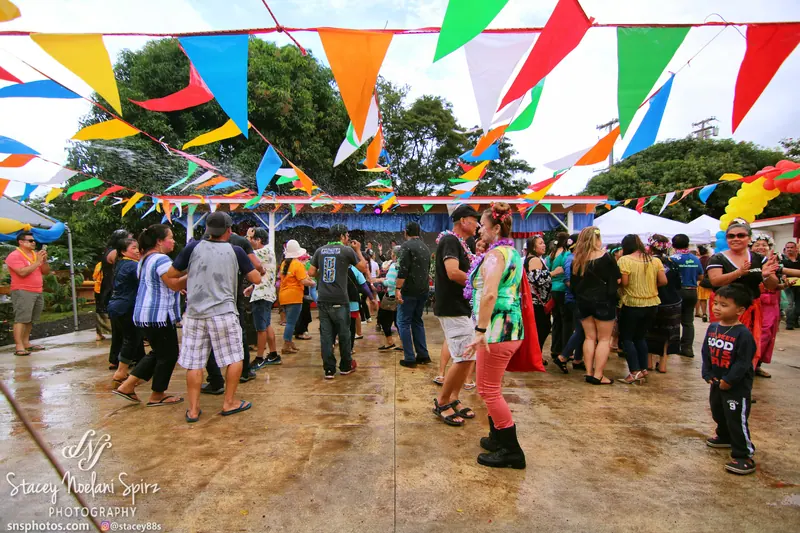
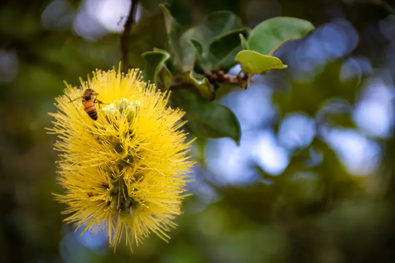
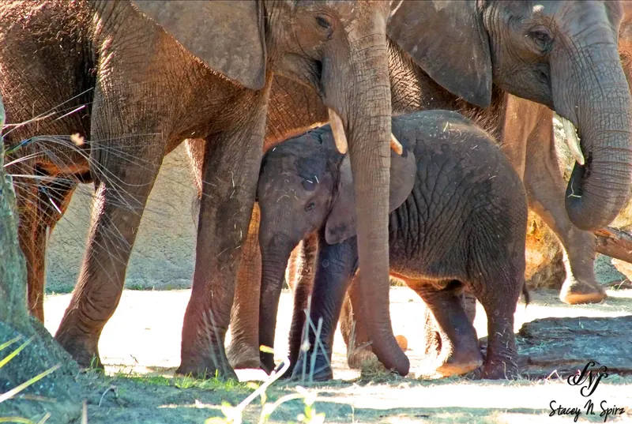
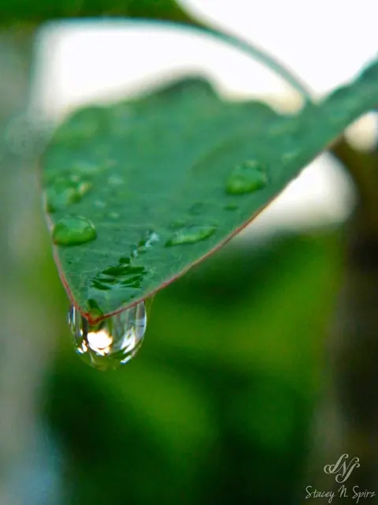

The portfolio
A collection of moments.
Different places, different subjects, one curiosity: seeing what I can capture.
Explore by subject
The Galleries
Choose a collection, then browse sideways with arrows or a swipe. You can also open photographs full screen.

Landscapes & Travel
The places that stay with us
View 19 photographs ↗
Portraits & Candid
People, presence, and small moments
View 8 photos + 2 featured stories ↗
Events & Action
Energy in every frame
View 11 photographs ↗
Cars & Culture
Custom builds, lights, and the people behind them
View 13 photographs ↗
Botany & Blooms
Color lives in the details
View 15 photographs ↗
Nature & Wildlife
A closer look at living things
View 9 photographs ↗
Close-Up & Details
Beauty in the overlooked
View 9 photographs ↗